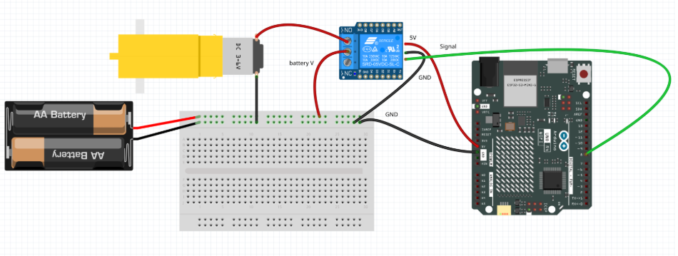

Relay & DC Motor Circuit
This wiring diagram was created using Fritzing. It demonstrates how to use a relay module to control a DC motor with a microcontroller. The relay isolates the microcontroller’s low-voltage control signal from the motor’s power supply, enabling safe switching of higher current.
